Mission
Open the mission route for experts, ethics, method so environmental, sustainability & climate services visitors can compare context, proof, and next steps.
Open MissionHome / 01
Home opens as a clear environmental decision hub: what Terra offers, who it helps, why it matters, and which route to take first.
The first screen combines positioning, proof, primary action, and fast internal navigation, so people can act immediately or compare the rest of the home route with context.
Emissions dashboard hero
Select the closest route and Terra keeps the next step, proof, and follow-up expectation aligned with accountability and measurable change.

Site atlas
This homepage is the working index for environmental, sustainability & climate services: it explains the offer, points to every deeper page, and keeps the final action visible without making the visitor hunt.
A climate-accounting site with emissions dashboards, report proof, methodology panels, and audit CTAs. The page links problem, promise, services, process, proof, questions, support, legal routes, and conversion paths into one clear decision map.
Open the mission route for experts, ethics, method so environmental, sustainability & climate services visitors can compare context, proof, and next steps.
Open MissionOpen the services route for audits, carbon, esg so environmental, sustainability & climate services visitors can compare context, proof, and next steps.
Open ServicesOpen the impact route for areas, emissions, waste so environmental, sustainability & climate services visitors can compare context, proof, and next steps.
Open ImpactOpen the strategy route for baseline, roadmap, governance so environmental, sustainability & climate services visitors can compare context, proof, and next steps.
Open StrategyOpen the projects route for challenge, intervention, actions so environmental, sustainability & climate services visitors can compare context, proof, and next steps.
Open ProjectsOpen the reports route for esg, carbon, compliance so environmental, sustainability & climate services visitors can compare context, proof, and next steps.
Open ReportsOpen the resources route for guides, checklists, toolkits so environmental, sustainability & climate services visitors can compare context, proof, and next steps.
Open ResourcesOpen the faq route for standards, data, cost so environmental, sustainability & climate services visitors can compare context, proof, and next steps.
Open FAQOpen the contact route for audit, advisory, partnership so environmental, sustainability & climate services visitors can compare context, proof, and next steps.
Open ContactReview the local assets, icons, OG images, and static handoff materials used by Terra.
Open Asset SystemUse the full sitemap to recover any route and verify the whole Terra structure.
Open SitemapRead the privacy route before sending personal details through the static form.
Open PrivacyManage consent and understand the privacy-safe analytics approach.
Open CookiesHome / 02
Challenge frames the pressure behind the visit, then connects it to a practical path visitors can recognise and act on.
The copy avoids blame and panic. It shows the common friction, the practical consequence, and the calmer route Terra uses to move people forward.
Open Mission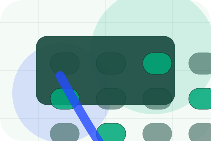
Challenge names the real friction visitors bring to the home route, so the page feels relevant before any claim is made.
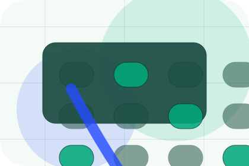
The copy connects that friction to practical risk, delay, confusion, or missed opportunity without exaggerating it.
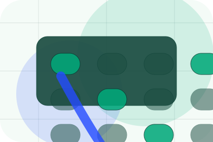
The final cue moves visitors toward a clearer route instead of leaving them with the problem alone.
Home / 03
Risk frames the pressure behind the visit, then connects it to a practical path visitors can recognise and act on.
The copy avoids blame and panic. It shows the common friction, the practical consequence, and the calmer route Terra uses to move people forward.
Open ServicesRisk names the real friction visitors bring to the home route, so the page feels relevant before any claim is made.
The copy connects that friction to practical risk, delay, confusion, or missed opportunity without exaggerating it.
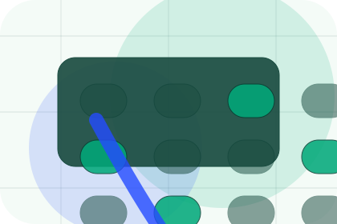
The final cue moves visitors toward a clearer route instead of leaving them with the problem alone.
Emissions dashboard hero
Select the closest route and Terra keeps the next step, proof, and follow-up expectation aligned with accountability and measurable change.
Home / 04
Promise defines the better state Terra is built to create, with enough detail to make the promise believable.
A climate-accounting site with emissions dashboards, report proof, methodology panels, and audit CTAs. The section grounds that direction in concrete benefits, visible tradeoffs, and a next route visitors can use when the promise feels relevant.
Open ImpactPromise defines what becomes clearer, easier, or safer when Terra is the chosen route.
The benefit is tied to accountability and measurable change, not a vague quality claim.
Visitors get a linked path to compare the promise against services, standards, or examples.
Home / 05
Services explains the practical scope, best-fit situations, and expected outcome so environmental visitors can compare options without decoding jargon.
The section keeps the offer concrete: what is included, who it is best for, what decision it supports, and which linked route gives the deeper detail.
Open ServicesWho should use services and when it belongs in the home journey.
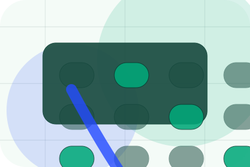
The practical benefit visitors should expect after choosing this route.
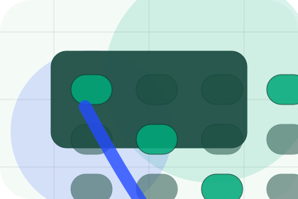
Where to compare details, pricing, support, or contact options before committing.
Emissions dashboard hero
Select the closest route and Terra keeps the next step, proof, and follow-up expectation aligned with accountability and measurable change.
Home / 06
Impact shows what changes after the work: clearer decisions, visible progress, and proof points that connect the offer to real outcomes.
The layout connects before-and-after thinking with measured outcomes, making the result easy to scan without promising what the business cannot guarantee.
Open ProjectsThe uncertainty, delay, or missed opportunity visitors bring into impact.
The clearer, safer, or more valuable state Terra is designed to support.
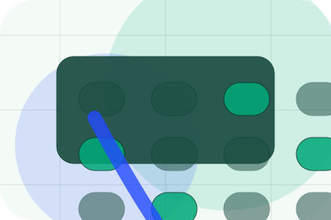
The visible cue that connects impact to a believable decision, not a loose claim.
Home / 07
Projects adds technical context to the home route, using the climate data operating system structure to support accountability and measurable change before visitors choose a next step.
Terra uses carbon evidence cards and focused copy to make the decision easier to scan, aligning the section with accountability and measurable change rather than filling space.
Open ReportsProjects gives the page a specific angle instead of repeating the navigation label.
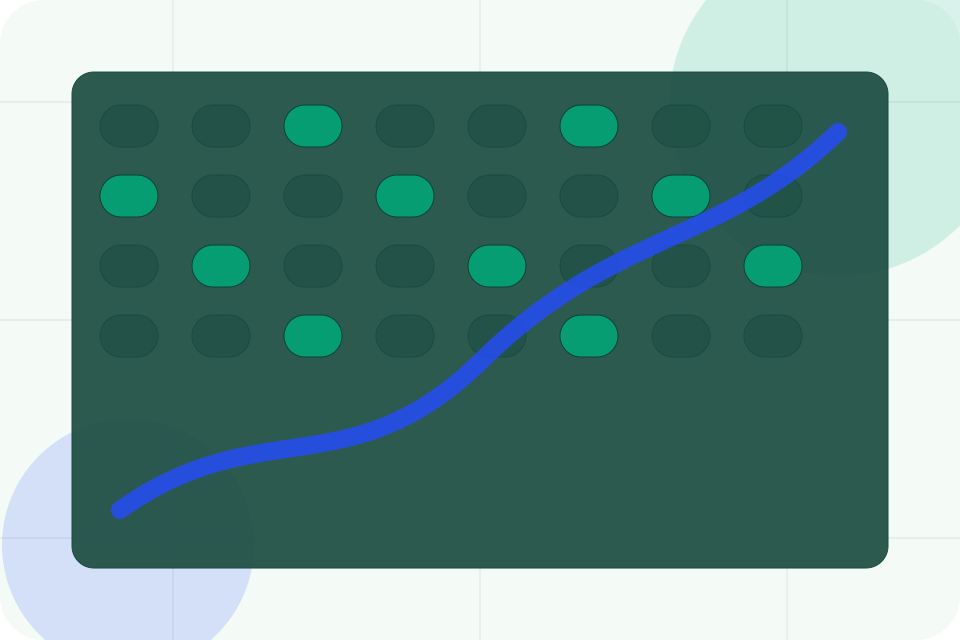
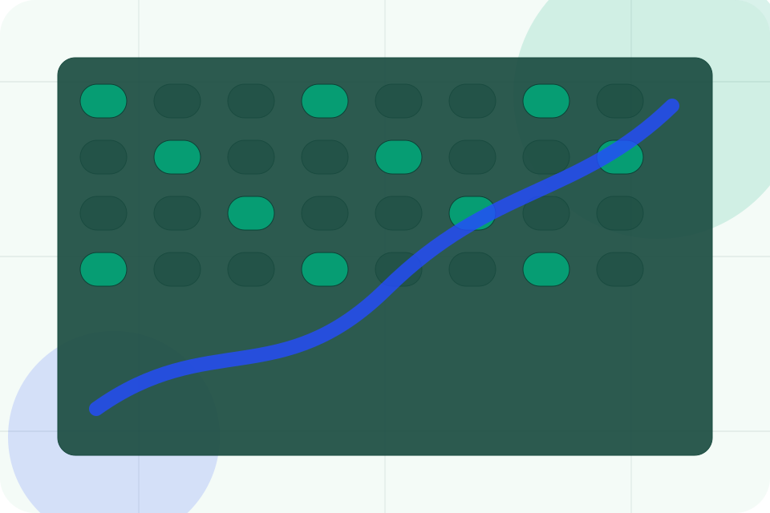
Home / 08
Trust gives the proof layer for home: standards, evidence, and reassurance that make the next decision feel grounded.
Instead of relying on vague claims, Terra presents visible standards, process cues, and proof artifacts that help environmental visitors judge fit.
Open ResourcesVisible proof that helps visitors believe the claims behind trust.
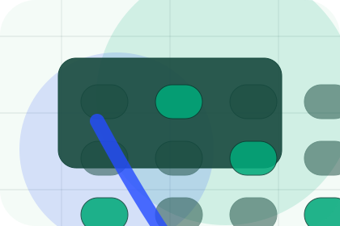
The quality, safety, or operating expectation this section makes explicit.
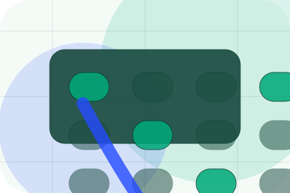
What becomes clearer before someone decides whether to book an audit.
Home / 09
Questions handles buying doubts directly so visitors can understand timing, fit, limits, and the safest next step.
Answers are short by design: enough to remove hesitation, not so much that the page turns into documentation before the visitor can act.
Open ContactQuestions gives the page a specific angle instead of repeating the navigation label.
The carbon evidence cards show what to compare, what to avoid, and what matters most for environmental, sustainability & climate services visitors.
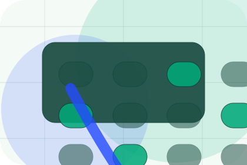
The final cue points to a useful internal route so the section keeps the journey moving.
Terra starts with a focused intake so the recommendation matches the visitor's context, risk, timing, and readiness.
Each route explains inclusions, exclusions, documents, timing, and the decision points that affect final delivery.
The theme uses climate data operating system, carbon evidence cards, and impact metric filters, esg report archive, audit route selector rather than a shared template rhythm.
Emissions dashboard hero
Select the closest route and Terra keeps the next step, proof, and follow-up expectation aligned with accountability and measurable change.
Information is provided for planning and should be reviewed for the final client, location, and operating rules.
Home / 10
Terra closes the home route with a clear action, a quick reminder of the value, and a low-friction way to book an audit.
Visitors who are ready can use the primary action. Visitors who are still comparing can scan the section links, proof, and support routes before they book an audit.
Book AuditThe final block keeps the choice simple: act now, compare one more proof route, or send enough detail for a focused response.
Book Auditaccountability and measurable change
A climate-accounting site with emissions dashboards, report proof, methodology panels, and audit CTAs. Home ends with a direct path to book an audit, plus enough context for visitors who still need to compare.
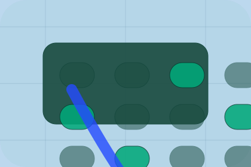
Book Audit